Loads a simple feature (sf) object containing areas with the required
hydrograpic elements of Spain.
esp_get_hydrobasin( epsg = "4258", cache = TRUE, update_cache = FALSE, cache_dir = NULL, verbose = FALSE, resolution = "3", domain = "land" )
Arguments
| epsg | projection of the map: 4-digit EPSG code. One of:
|
|---|---|
| cache | A logical whether to do caching. Default is |
| update_cache | A logical whether to update cache. Default is |
| cache_dir | A path to a cache directory. See Details. |
| verbose | Display information. Useful for debugging,
default is |
| resolution | Resolution of the polygon. Values available are "3", "6.5" or "10". |
| domain | Possible values are "land", that includes only the ground part or the ground or "landsea", that includes both the ground and the related sea waters of the basin |
Source
IGN data via a custom CDN (see https://github.com/rOpenSpain/mapSpain/tree/sianedata.
Value
A POLYGON object.
Details
Metadata available on https://github.com/rOpenSpain/mapSpain/tree/sianedata/.
Author
dieghernan, https://github.com/dieghernan/
Examples
# \donttest{ # This code would produce a nice plot - It will take a few seconds to run library(sf) all <- esp_get_prov() mainland <- all[all$codauto != esp_dict_region_code("Canarias", destination = "codauto"), ] hydroland <- esp_get_hydrobasin(domain = "land") hydrolandsea <- esp_get_hydrobasin(domain = "landsea") # Plot opar <- par(no.readonly = TRUE) par(mar = c(0, 0, 0, 0)) # Background plot(st_as_sfc(st_bbox(mainland)), col = "grey90", border = NA)plot( st_geometry(hydroland), col = adjustcolor("skyblue", alpha.f = 0.5), add = TRUE, border = "lightblue" )
Site built with pkgdown 1.6.1.
Template by Bootstrapious . Ported to pkgdown by dieghernan.